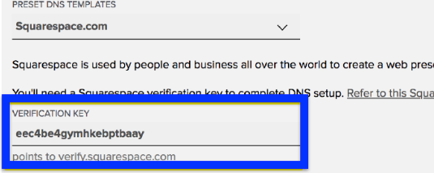

Define what “done” means
Name.com’s template instructions end at Update DNS Records. Squarespace’s instructions continue: check the saved records, then return to Squarespace to see whether the domain has connected.
User story. As a first-time domain owner, I want to know when I’ve finished my part and where to check back. Whether the existing instructions give customers that confidence is still an open question.
One code, two interfaces
I could inspect the signed-in menus, but my account had no domain to configure. I used the providers’ published screenshots to trace one value across the two tabs.

The guide calls this column Name. The screenshot shows Host. The row pointing to verify.squarespace.com gives readers a landmark under either label.

Name.com calls the same value Verification Key. The screenshots use different example domains. A customer copies the code from their own Squarespace tab.
The template already prepares all six website records. I kept that shortcut and put the two fields together in the guide so the reader can see the relationship before switching tabs.
Start with the help article
A clearer article is the smallest change I can test with the published workflow. I moved the overwrite warning ahead of the save action, then gave readers a stopping rule:
If the six saved website records match the ones in Squarespace, you can close Name.com. Check the connection in Squarespace later.Read the revised guide
Let the owner leave the tab
The guide gives the owner permission to leave, but checking back still takes effort. I’d offer an optional “Email me when it’s connected” choice after the records are saved. Here’s what I’d send when Squarespace confirms the connection.
Squarespace has verified the connection for studio.example. You’ve finished domain setup and can close any setup tabs you still have open.
You can see the Connected status in your Squarespace Domains panel whenever you need it.
What would trigger it? I’d first ask Engineering whether Name.com can receive a reliable verification signal from Squarespace. If it can, send one email per verified connection to an owner who opted in. A save, a failed check, or elapsed time alone would never trigger it. If verification is unavailable, the alternative is an explicitly labeled reminder to check.
Test what people think happened
I’d start with the existing instructions and a fictional setup. Two people could enter the same code and click Save, yet only one might know that verification is still pending. After they finish, I’d ask, “If you closed the laptop now, what would you expect to happen? Where would you check?”
- Wrong value entered
- Try a still showing the two fields together. Give the next participant a fresh code and see whether they can identify it unaided.
- Correct save, wrong expectation
- Focus the next revision on the confirmation message. Another illustration of the code would teach a step they already understand.
- Both steps understood
- Keep the current guidance and investigate another step.
In a PostHog experiment, I’d compare the share of first submissions that contain the correct code and count started tasks with no submission separately. The participant’s answer tells me whether the guide also explained when they could leave.
What the team needs before release
Acceptance criteria. After a failed save, the guide tells the reader how to check what was retained. After a successful save, it identifies which records to compare. It reserves “Connected” for the state Squarespace verifies.
I’d ask Support for examples of questions that came in after a successful save. If customers can copy the key but still contact Support to ask whether they’re done, I’d test guidance on the confirmation screen itself.
Before release I’d check that the instructions work with a keyboard and with images off, and that the field names still match both services. The proposed tests haven’t been run.